8 Algebraic expressions 2
In this chapter, you will learn about simplifying algebraic expressions by expanding them. Expanding an algebraic expression allows you to change the form of an expression without changing the output values it gives.
Rewriting an expression in a different form can be useful for simplifying calculations and comparing expressions. We use two main tools to simplify expressions: we combine like terms and/or use the distributive property.
8.1 Expanding algebraic expressions
multiply often or multiply once: it is your choice
-
- Calculate \(5 \times 13\) and \(5 \times 87\) and add the two answers.
- Add 13 and 87, and then multiply the answer by 5.
- If you do not get the same answer for questions 1(a) and 1(b), you have made a mistake. Redo your work until you get it right.
The word distribute means "to spread out". The distributive properties may be described as follows:
\(a(b + c) = ab +ac\) and
\(a(b - c) = ab -ac\) and
where \(a\), \(b\) and \(c\) can be any numbers.
The fact that, if you work correctly, you get the same answer for questions 1(a) and 1(b) is an example of a certain property of addition and multiplication called the distributive property. You use this property each time you multiply a number in parts. For example, you may calculate \(3 \times 24\) by calculating
\(3 \times 20\) and \(3 \times 4\), and then add the
two answers:
\(3 \times 24 = 3 \times 20 + 3 \times 4\)
What you saw in question 1 was that \(5
\times 100 = 5 \times 13 + 5 \times 87\).
This can also be expressed by writing
\(5(13 + 87)\).
-
- Calculate \(10 \times 56\).
- Calculate \(10 \times 16 + 10 \times
40\).
- Write down any two numbers smaller than
100. Let us call them \(x\) and \(y\).
- Add your two
numbers, and multiply the answer by 6.
- Calculate \(6 \times x\) and \(6 \times
y\) and add the two answers.
- If you do not get
the same answers for (a) and (b) you have made a mistake
somewhere. Correct your work.
- Complete the table.
-
|
\(x\)
|
1
|
2
|
3
|
4
|
5
|
|
\(3(x + 2)\)
|
|
|
|
|
|
|
\(3x + 6\)
|
|
|
|
|
|
|
\(3x + 2\)
|
|
|
|
|
|
|
\(3(x - 2)\)
|
|
|
|
|
|
|
\(3x - 6\)
|
|
|
|
|
|
|
\(3x - 2\)
|
|
|
|
|
|
- If you do not get the same answers for
the expressions \(3(x + 2)\) and \(3x + 6\), and
for \(3(x-2)\) and \(3x -6\), you have made a mistake somewhere. Correct your
work.
In algebra we normally write
\(3(x + 2)\) instead of \(3 \times (x + 2)\). The
expression \(3 \times (x + 2)\) does not mean that you
should first multiply by 3 when you evaluate the expression for
a certain value of \(x\). The brackets tell you that the
first thing you should do is add the value(s) of \(x\) to 2
and then multiply the answer by 3.
However, instead of first adding the values
within the brackets and then multiplying the answer by 3 we may
just do the calculation \(3 \times x + 3 \times 2 =
3x + 6\) as shown in the table.
- Which expressions amongst those given in
the table are equivalent? Explain.
- For what value(s) of \(x\) is
\(3(x + 2) = 3x + 2\)?
- Try to find a value of \(x\) such
that \(3(x + 2) \neq 3x + 6\).
If multiplication is the
last step in evaluating an algebraic expression, then the
expression is called a product expression or, briefly,
a product. The way you evaluated the expression
\(3(x + 2)\) in the table is an example of a product
expression.
-
- Determine the value of
\(5x + 15\) if \(x = 6\).
- Determine the value of
\(5(x + 3)\) if \(x = 6\).
- Can we use the expression \(5x + 15\)
to calculate the value of \(5(x + 3)\) for any values of
x? Explain.
- Complete the flow
diagrams.
-
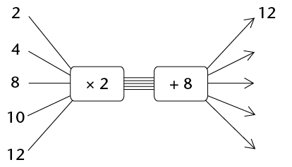
-
-
-
-
-
-
- Which of the above flow diagrams
produce the same output numbers?
- Write an algebraic expression for each
of the flow diagrams in question 6.
product expressions AND sum
expressions
- Complete the following:
\( (3 + 6) + (3 + 6) + (3 +
6) + (3 + 6) + (3 + 6) \\ = \text{______} \times \text{(____________)} \)
- \( (3 + 6) + (3 + 6) + (3 +
6) + (3 + 6) + (3 + 6) \\ = (3 + 3 + \text{______}) + \text{(__________________)} \\ \text{(______} \times \text{______)} \text{(______} \times \text{______)} \)
- 2. Complete the following:
- \((3x + 6) +
(3x + 6) + (3x + 6) + (3x + 6) +
(3x + 6) \\ = \text{______} \times \text{(____________)} \)
- \( (3x + 6) +
(3x + 6) + (3x + 6) + (3x + 6) +
(3x + 6) \\ = (3x + 3x \text{______}) + \text{(__________________)} \\ \text{(______} \times \text{______)} \text{(______} \times \text{______)} \)
In each case, write an
expression without brackets that will give the same results as
the given expression.
- \(3(x + 7)\)
- \(10(2x + 1)\)
- \(x(4x + 6)\)
- \(3(2p + q)\)
- \(t(t + 9)\)
- \(x(y + z)\)
- \(2b(b + a - 4)\)
- \(k^2(k - m)\)
The process of writing
product expressions as sum expressions is called
expansion. It is sometimes also referred to as
multiplication of algebraic expressions.
-
- Complete the table for the given
values of \(x, y\) and \(z\).
|
\(3(x
+ 2y + 4z)\)
|
\(3x +
6y + 12z\)
|
\(3x +
2y + 4z\)
|
|
\(x =
1\)
\(y =
2\)
\(z =
3\)
|
|
|
|
|
\(x =
10\)
\(y =
20\)
\(z =
30\)
|
|
|
|
|
\(x =
23\)
\(y =
60\)
\(z =
100\)
|
|
|
|
|
\(x =
14\)
\(y =
0\)
\(z =
1\)
|
|
|
|
|
x =
5
\(y =
9\)
\(z =
32\)
|
|
|
|
- Which sum expression and product
expression are equivalent?
- For each expression, write an
equivalent expression without brackets.
- \(2(x^2 + x + 1)\)
- \(p(q + r + s)\)
- \(-3(x + 2y + 3z)\)
- \(x(2x^2 + x + 7)\)
- \( 6x(8 - 2x)\)
- \(12x(4 - x)\)
- \(3x(8x - 5) - 4x(6x - 5)\)
- \(10x(3x(8x - 5) - 4x(6x - 5))\)
8.2 Simplifying algebraic expressions
expand, rearrange and then combine like terms
- Write the shortest possible
equivalent expression without brackets.
- \(x + 2(x + 3) \)
- \(5(4x + 3) + 5x\)
- \(5(x + 5) + 3(2x + 1) \)
- \((5 + x)^2\)
- \(-3(x^2 + 2x - 3) + 3(x2 + 4x)\)
- \(x(x - 1) + x + 2\)
When you are not sure
whether you simplified an expression correctly, you should
always check your work by evaluating the original expression
and the simplified expression for some values of the
variables.
-
- Evaluate \(x(x + 2) + 5x^2 - 2x\) for \(x = 10\).
- Evaluate \(6x^2\) for \(x = 10\).
- Can we use the expression \(6x^2\) to calculate the values of the expression \(x(x + 2) + 5x^2 - 2x\) for any given value of \(x\)? Explain.
This is how a sum expression for \(x(x + 2) + 5x^2 - 2x\) can be made:
\( \begin{align} x(x + 2) + 5x^2 - 2x &= x \times x + x \times 2 + 5x^2 - 2x \\
& = x^2 + 2x + 5x^2 - 2x \\ &= x^2 + 5x^2 + 2x - 2x \text{ [Rearrange and combine like terms]} \\ &= 6x^2 + 0 \end{align}\)
- Evaluate the following expressions for \(x = -5\):
- \( x + 2(x + 3)\)
- \(5(4x + 3) + 5x\)
- \(5(x + 5) + 3(2x + 1)\)
- \((5 + x)^2\)
- \(-3(x^2 + 2x - 3) + 3(x^2 + 4x)\)
- \(x(x - 1) + x + 2\)
- Complete the table for the
given values of \(x, y\) and \(z\).
|
\(x\)
|
100
|
80
|
10
|
20
|
30
|
|
\(y\)
|
50
|
40
|
5
|
5
|
20
|
|
\(z\)
|
20
|
30
|
2
|
15
|
10
|
|
\(x + (y - z)\)
|
|
|
|
|
|
|
\(x - (y - z)\)
|
|
|
|
|
|
|
\(x - y -z\)
|
|
|
|
|
|
|
\(x - (y + z)\)
|
|
|
|
|
|
|
\(x + y - z\)
|
|
|
|
|
|
|
\(x - y + z\)
|
|
|
|
|
|
-
- Say whether the
following statements are true or false. Refer to the table in
question 4.For any values of \(x, y\) and \(z\):
- \( x + (y - z) = x + y-z\)
- \(x - (y - z) = x - y - z\)
- Write the expressions without
brackets. Do not simplify.
- \( 3x - (2y + z)\)
- \( -x + 3(y - 2z)\)
We can simplify algebraic expressions
by using properties of operations as shown:
\(x - (y +z) = x - y - z\)
Addition is both associative
and commutative.
\((5x + 3) - 2(x + 1)\)
Hence \(5x + 3 - 2x - 2\)
Hence \(5x - 2x + 3 - 2\)
Hence \(3x + 1\)
- Write an equivalent
expression without brackets for each of the following
expressions and then simplify:
- \(22x + (13x - 5) \)
- \( 22x - (13x - 5)\)
- \(22x - (13x + 5) \)
- \(4x - (15 - 6x) \)
- Simplify.
- \(2(x^2 + 1) - x - 2 \)
- \(-3(x^2 + 2x - 3) + 3x^2 \)
Here are some of the
techniques we have used so far to form equivalent
expressions:
- Remove brackets
- Rearrange terms
- Combine like terms
8.3 Simplifying quotient expressions
FROM QUOTIENT
EXPRESSIONS TO SUM EXPRESSIONS
- Complete the table for the
given values of x.
|
\(x\)
|
1
|
7
|
-3
|
-10
|
|
\(7x^2 + 5x\)
|
|
|
|
|
|
\(\frac{7x^2 + 5x}{x}\)
|
|
|
|
|
|
\(7x + 5\)
|
|
|
|
|
|
\(7x + 5x\)
|
|
|
|
|
|
\(7x^2 + 5\)
|
|
|
|
|
-
- What is the value of \(7x + 5\)
for \(x = 0\)?
- What is the value of \(\frac{7x^2 + 5x}{x}\) for \(x = 0\)?
Which of the two expressions, \(7x + 5\) or \(\frac{7x^2 + 5x}{x}\), requires fewer calculations?
Explain.
- Are the expressions \(7x + 5\) and \(\frac{7x^2 + 5x}{x}\) equivalent, \(x = 0\) excluded? Explain.
- Are there any other expressions that are
equivalent to \(\frac{7x^2 + 5x}{x}\) from those given in the table?
Explain.
If division is the last
step in evaluating an algebraic expression, then the
expression is called a quotient expression or an
algebraic fraction.
- Complete the table for the
given values of \(x\).
|
\(x\)
|
\(5\)
|
\(10\)
|
\(-5\)
|
\(-10\)
|
|
\(10x - 5x^2\)
|
|
|
|
|
|
\(5x\)
|
|
|
|
|
|
\(\frac{10x - 5x^2}{5x}\)
|
|
|
|
|
|
\(2 -
x\)
|
|
|
|
|
- What is the value of \(2 - x\) for
\(x = 0\)?
- What is the value of \( \frac{10x - 5x^2}{5x}\) for \(x = 0\)?
- Are the expressions \(2 - x\) and \( \frac{10x - 5x^2}{5x}\) equivalent, \(x = 0\) excluded? Explain.
- (d) Which of the two expressions \(2 -
x\) or \( \frac{10x - 5x^2}{5x}\) requires fewer calculations? Explain.
We have found that quotient
expressions such as \( \frac{10x - 5x^2}{5x}\) can sometimes be manipulated to
give equivalent expressions such as \(2 - x\).
The value is that these equivalent expressions require fewer calculations.
The expressions \( \frac{10x - 5x^2}{5x}\) and \(2-x\) are not quite equivalent because for \(x =0\), the value of \(2 -x\) can be calculated, while the first expression has no value.
However, we can say that the two expressions are equivalent if they have the same values for all values of \(x\) admissible for both expresssions.
How is it possible that \( \frac{7x^2 + 5x}{x} = 7x + 5\) and \( \frac{10x - 5x^2}{5x} = 2 - x\) for all
admissible values of \(x\)? We
say \(x = 0\) is not an admissible value
of \(x\)because division by 0 is not
allowed.
One of the methods for finding equivalent
expressions for algebraic fractions is by means of
division:
\( \begin{align} \frac{7x^2 + 5x}{x} &= \frac{1}{x}(7x^2 +5x) &&\text{[just as } \frac{3}{5} = 3 \times \frac{1}{5} {]} \\
&= (\frac{1}{x} \times 7x^2)+ (\frac{1}{x} \times 5x) && \text{[distributive property]} \\
&= (\frac{7x^2}{x} + (\frac{5x}{x} \\
&= 7x + 5 &&\text{[provided } x \neq 0 {]} \end{align} \)
- Use the method shown above to simplify each fraction below.
- \(\frac{8x+10z+6}{2}\)
- \(\frac{20x^2 + 16x}{4}\)
- \(\frac{9x^2y +xy}{xy}\)
- \(\frac{21ab - 14a^2}{7a}\)
Simplifying a quotient
expression can sometimes lead to a result which still
contains quotients, as you can see in the example below.
\( \begin{align} & \frac{5x^2 + 3x}{x^2} \\ &=\frac{5x^2}{x^2} + \frac{3x}{x^2} \\ & = 5 + \frac{3}{x} \end{align} \)
-
- \(\frac{5x^2 + 3x}{x^2}\) for \(x = -1\).
- For the expression \(\frac{5x^2 + 3x}{x^2}\) to be equivalent to \(5 + \frac{3}{x}\) which value of x must be excluded?
Why?
- Simplify the following
expressions:
- \(\frac{8x^2 + 2x + 4}{2x}\)
- \(\frac{4n + 1}{n}\)
- Evaluate:
- \(\frac{8x^2 + 2x + 4}{2x}\) for \(x = 2\)
- \(\frac{4n + 1}{n}\) for \(n = 4\)
- Simplify.
- \(\frac{6x^4 - 12x^3 + 2}{2x}\)
- \(\frac{-6n^4 - 4n}{6n}\)
- When Natasha and
Lebogang were asked to evaluate the expression \(\frac{x^2 + 2x + 1}{2x}\) for \(x = 10\), they did it in
different ways.
Natasha's calculation: \(10 + 2 \frac{1}{10} \\ =12\frac{1}{10} \)
Lebogang's calculation: \(\frac{100 + 20 + 1}{10} \\ =\frac{121}{10} \\ =12\frac{1}{10} \)
Explain how
each of them thought about evaluating the given expression.
8.4 Squares, cubes and roots of expressions
simplifying squares
and cubes
Study the
following example:
\((3x)^2 =
3x \times 3x\)
\(= 3 \times
x \times 3 \times x\)
\(= 3 \times 3
\times x \times x\)
Multiplication is commutative:
\(a \times b = b \times a\)
\(= 9x^2\)
We say that \((3x)^2\) simplifies to \(9x^2\)
- Simplify the expressions.
- \((2x)^2\)
- \((2x^2)^2\)
- \((-3y)^2\)
- Simplify the expressions.
- \(25x - 16x\)
- \(4y + y + 3y\)
- \(a + 17a - 3a\)
- Simplify.
- \((25x - 16x)^2\)
- \((4y + y + 3y)^2\)
- \((a + 17a - 3a)^2\)
Study the
following example:
\((3x)^3 = 3x \times 3x \times 3x\)
\(= 3 \times
x \times 3 \times x \times 3 \times x\)
\(= 3 \times 3
\times 3 \times x \times x \times x\)
Multiplication is commutative:
\(a \times b = b \times a\)
\(= 27x^3\)
We say that \((3x)^3\) simplifies to
\(27x^3\)
- Simplify the following:
- \((2x)^3\)
- \((-x)^3\)
- \((5a)^3\)
- \((7y^2)^3\)
- \((-3m)^3\)
- \((2x^3)^3\)
- Simplify.
- \(5a - 2a\)
- \(7x + 3x \)
- \(4b + b\)
- 6. Simplify.
- \((5a - 2a)^3\)
- \((7x + 3x)^3 \)
- \((4b + b)^3\)
- \((13x - 6x)^3\)
- \((17x + 3x)^3 \)
- \((20y - 14y)^3\)
Always remember to test
whether the simplified expression is equivalent to the given
expression for at least three different values of the given
variable.
square and cube roots of
expressions
- Thabang and his friend Vuyiswa
were asked to simplify \( \sqrt{2a^2 \times 2a^2}\).
Thabang reasoned as follows:
To find the square root of a number
is the same as asking yourself the question: "Which number was
multiplied by itself?" The number that is multiplied by itself
is \(2a^2\) and therefore \( \sqrt{2a^2 \times 2a^2} = 2a^2\)
Vuyiswa reasoned as follows:
I should first simplify
\(2a^2 \times 2a^2\) to get
\(4a^4\) and then calculate \( \sqrt{4a^4} = 2a^2\)
Which of the two methods do you
prefer? Explain why.
- Say whether each of the
following is true or false. Give a reason for your answer.
- \( \sqrt{6x \times 6x} = 6x\)
- \( \sqrt{5x^2 \times 5x^2} = 5x^2\)
- Simplify.
- \(y^6 \times y^6\)
- \(125x^2 + 44x^2\)
- Simplify.
- \(\sqrt{y^{12}}\)
- \(\sqrt{125x^2 + 44x^2}\)
- \(\sqrt{25a^2 - 16a^2}\)
- \(\sqrt{121y^2}\)
- \(\sqrt{16a^2 + 9a^2}\)
- \(\sqrt{25a^2 - 9a^2}\)
- What does it mean to find the cube root of \(8x^3\) written as \(\sqrt[3]{8x^3}\)?
- Simplify the following:
- \(2a \times 2a \times 2a\)
- \(10b^3 \times 10b^3 \times 10b^3\)
- \(3x^3 \times 3x^3 \times 3x^3\)
- \(-3x^3 \times -3x^3 \times -3x^3\)
Determine the following:
\(\sqrt[3]{1000b^9}\)
\(\sqrt[3]{2a \times 2a \times 2a}\)
\(\sqrt[3]{27x^3}\)
\(\sqrt[3]{-27x^3}\)
Simplify the following
expressions:
- \(6x^3 + 2x^3\)
- \(-m^3 - 3m^3 - 4m^3\)
Determine the following:
- \(\sqrt[3]{6x^3 + 2x^3}\)
- \(\sqrt[3]{-8m^3}\)
- \(\sqrt[3]{125y^3}\)
- \(\sqrt[3]{93a^3 + 123a^3}\)
- Simplify the following:
- \(2(3b + 1) + 4\)
- \(6 - (2 + 5e)\)
- \(18mn + 22mn + 70mn\)
- \(4pqr + 3 + 9pqr\)
- Evaluate each of the following
expressions for \(m = 10\):
- \(3m^2 + m + 10\)
- \(5(m^2 - 5) + m^2 + 25\)
-
- Simplify: \( \frac{4b + 6}{2}\)
- Evaluate the expression \( \frac{4b + 6}{2}\) for \(b = 100\).
- Simplify
- \((4g)^2\)
- \((6y)^3\)
- \((7s + 3s)^2\)
- Determine the following:
- \( \sqrt{121b^2}\)
- \( \sqrt[3]{64y^3}\)
- \( \sqrt{63d^2 + 18d^2}\)
9
Algebraic equations 2
In this chapter you will solve
equations by applying inverse operations. You will also solve
equations that contain exponents.
9.1 Thinking forwards and backwards
doing and undoing
what has been done
- Complete the flow diagram by
finding the output values.

- . Complete the table.
- Evaluate \(4x\) if:
- \(x = -7\)
- \( x = 10\)
- \( x = 0\)
-
- Complete the flow diagram by finding
the input values.

- Puleng put another integer into the flow
diagram and got -68 as an answer. Which integer did she put in?
Show your calculation.
- Explain how you worked to find the input
numbers when you did question (a).
-
- Complete the table.
- Complete the flow diagrams.
- Explain how you completed the table.
One of the things we do in
algebra is to evaluate expressions. When we evaluate
expressions we replace a variable in the expression with an
input number to obtain the value of the expression
called the output number. We will think of this
process as a doing process.
- Look again at
questions 1 to 5. For each question, say whether the question
required a doing or an undoing process. Give an explanation for
your answer (for example: input to output).
-
- Complete the flow diagrams below.
- What do you observe?
-
- Complete the flow diagrams below.
- What do you observe?
- Complete the flow diagrams below.
- What do you observe?
- Complete the flow diagram below.

- What calculations will you do to
determine what the input number was when the output number is
20?
Solve the following problems by
undoing what was done to get the answer:
- When a certain number is
multiplied by 10 the answer is 150. What is the number?
- When a certain number is
divided by 5 the answer is 1. What is the number?
- When 23 is added to a
certain number the answer is 107. What is the original
number?
- When a certain number is multiplied by 5 and 2 is subtracted
from the answer, the final answer is 13. What is the original
number?
Moving from the output
value to the input value is called solving the equation
for the unknown.
9.2 Solving equations using the additive and multiplicative inverses
finding the
unknown
Consider the equation \(3x + 2 =
23\).
We can represent the equation
\(3x + 2 = 23\) in a flow diagram, where x represents
an unknown number:

When you reverse the process in the
flow diagram, you start with the output number 23, then
subtract 2 and then divide the answer by 3:

We can write all of the above reverse
process as follows:
Subtract 2 from both sides of the equation:
\( \begin{align} 3x + 2 - 2 &= 23 - 2 \\ 3x &= 21 \\ \text{Divide both sides by 3}: \\ \frac{3x}{3} &= \frac{21}{3} \\ x&=7 \end{align}\)
We say \(x = 7\) is the solution
of \(3x + 2 = 23\) because \(3 \times 7 + 2 = 23\). We say that
\(x = 7\) makes the equation \(3x + 2 = 23\) true.
The numbers +2 and -2 are
additive inverses of each other. When we add a number
and its additive inverse we always get 0.
The numbers \(3\) and \(\frac{1}{3}\)are multiplicative inverses of each other. When we multiply a number and its multiplicative inverse we always get \(1\), so \(3 \times \frac{1}{3} = 1\)
The additive and multiplicative
inverses help us to isolate the unknown value or the input
value.
Also remember:
-
The
multiplicative property of 1: the product of any
number and 1 is that number.
-
The
additive property of 0: the sum of any
number and 0 is that number.
Solve the equations below by using
the additive and multiplicative inverses. Check your
answers.
- \(x + 10 = 0\)
- \(49x + 2 = 100\)
- \(2x = 1\)
- \(20 = 11 - 9x\)
In some cases you need to
collect like terms before you can solve the equations using
additive and multiplicative inverses, as in the example
below:
\(7x\) and \(3x\) are like terms and can be replaced with one equivalentexpression \((7+3)x = 10x\)
\( \begin{align} {\bf\text{Example:}}\text{ Solve for x: } 7x + 3x &= 10 \\ 10x &= 10 \\ \frac{10x}{10} &= \frac{10}{10} \\ x &= 1\end{align}\)
- \(4x + 6x = 20\)
- \( 5x = 40 + 3x\)
- \( 3x + 1 - x = 0\)
- \(x + 20 + 4x = -55\)
9.3 Solving equations involving powers
Solving an exponential
equation is the same as asking the question: To what
exponent must the base be raised in order to make the
equation true?
- Complete the table.
- Complete the table.
Karina solved the equation \(3x = 27\) as follows:
\( \begin{align} 3^x &= 27 \\ \text{Hence } 3^3 &= 3^3 \\ \text{Hence } x &= 3 \end{align}\)
The number \(27\) can be expressed
as \(3^3\) because \(3^3 = 27\).
- Now use Karina's method and
solve for x in each of the following:
- \(2^x = 32\)
- \(4^x = 16\)
- \(6^x = 216\)
- \(5^{x + 1} = 125\)
10
Construction of geometric figures
In this chapter, you will
learn how to construct, or draw, different lines, angles and
shapes. You will use drawing instruments, such as a ruler, to
draw straight lines, a protractor to measure and draw angles,
and a compass to draw arcs that are a certain distance from a
point. Through the various constructions, you will investigate
some of the properties of triangles and quadrilaterals; in
other words, you will find out more about what is always true
about all or certain types of triangles and quadrilaterals.
10.1 Bisecting lines
When we construct, or draw, geometric
figures, we often need to bisect lines or angles.Bisect
means to cut something into two equal parts. There are
different ways to bisect a line segment.
Bisecting a line segment with a
ruler
1. Read through the following
steps.
|
Step 1: Draw line
segment AB and determine its midpoint.

Step 2: Draw any
line segment through the midpoint.
The small marks on AF
and FB show that AF and FB are equal.

|
CD is called a
bisector because it bisects AB. AF = FB.
2. Use a ruler to draw
and bisect the following line segments: AB = 6 cm and XY = 7
cm.
In Grade 6, you learnt how to use a
compass to draw circles, and parts of circles called arcs. We
can use arcs to bisect a line segment.
Bisecting a line segment with a
compass and ruler
1. Read through the following
steps.
|
Step 1
Place the compass on one endpoint of the line segment
(point A). Draw an arc above and below the line.
(Notice that all the points on the arc aboveand
below the line are the same distance from point
A.)
Step 2
Without changing the compass width, place the compass
on point B. Draw an arc above and below the line so
that the arcs cross the first two. (The two points
where the arcs cross are the same distance away from
point A and from point B.)
Step 3
Use a ruler to join the points where the
arcs intersect.This line
segment (CD) is the bisector of AB.
Intersect means
to cross or meet.
A perpendicular
is a line that meets another line at an angle of
90°.
|
Notice that CD is also
perpendicular to AB. So it is also called a
perpendicular bisector.
2. Work in
your exercise book. Use a compass and a ruler to practise
drawing perpendicular bisectors on line segments.
Try this!
Work in your exercise book. Use
only a protractor and
ruler to draw a perpendicular bisector on a line
segment. (Remember that we use a protractor to measure
angles.)
10.2 Constructing perpendicular lines
A perpendicular line
from a given point
1. Read through the following
steps.
|
Step 1
Place your compass on the
given point (point P). Draw an arc across the line on
each side of the given point. Do not adjust the compass
width when drawing the second arc.

|
Step 2
From each arc on the
line, draw another arc on the opposite side of the line
from the given point (P). The two new arcs will
intersect.

|
|
Step 3
Use your ruler to join
the given point (P) to the point where the arcs
intersect (Q).

|
PQ is perpendicular to
AB. We also write it like this: PQ ⊥
AB.
|
2. Use your compass and
ruler to draw a perpendicular line from each given point to the
line segment:
A perpendicular line at a given
point on a line
1. Read through the following
steps.
|
Step 1
Place your compass on the
given point (P). Draw an arc across the line on each
side of the given point. Do not adjust the compass
width when drawing the second arc.

|
Step 2
Open your compass so that
it is wider than the distance from one of the
arcs to the point P. Place the compass on each
arc and draw an arc above or below the point P. The two
new arcs will intersect.
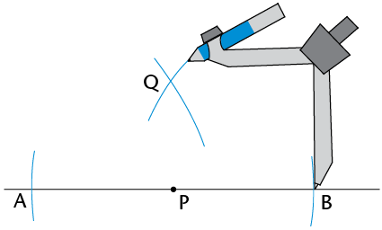
|
|
Step 3
Use your ruler to join
the given point (P) and the point where the arcs
intersect (Q).
PQ
⊥
AB
|
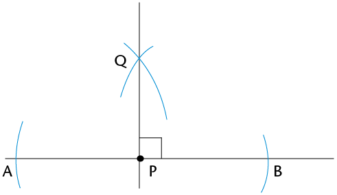
|
2. Use your compass and ruler to
draw a perpendicular at the given point on each line:

10.3 Bisecting angles
Angles are formed
when any two lines meet. We use degrees (°) to
measure angles.
Measuring and classifying
angles
In the figures below, each angle has
a number from 1 to 9.
1. Use a protractor to
measure the sizes of all the angles in each figure. Write your
answers on each figure.
(a) (b)
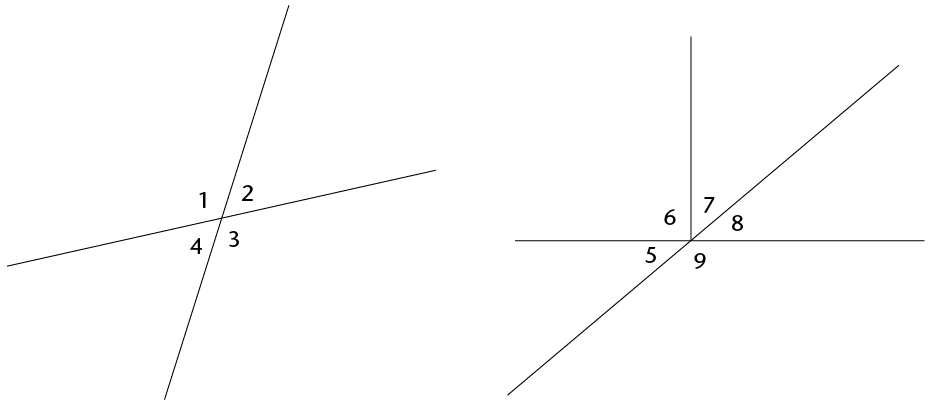
2. Use your answers to fill in
the angle sizes below.
 =
=
°
 =
=
°
 +
+  =
=
°
 +
+  =
=
°
 +
+  =
=
°
 +
+  +
+  =
=
°
 +
+  =
=
°
 + +
+ +  =
=
°
 +
+  =
=
°
 +
+  =
=
°
 +
+  +
+  =
=
°
 +
+  +
+  +
+  =
=
°
 +
+  +
+  + =
+ =
°
 +
+  +
+  +
+  +
+  =
=
°
3. Next to each answer
above, write down what type of angle it is, namely acute,
obtuse, right, straight, reflex or a revolution.
Bisecting angles without a
protractor
1. Read through the following
steps.
|
Step 1
Place the compass on the
vertex of the angle (point B). Draw an arc across
each arm of the angle.
|
Step 2
Place the compass on the
point where one arc crosses an arm and draw an arc
inside the angle.
Without changing the compass width, repeat for the
other arm so that the two arcs cross.
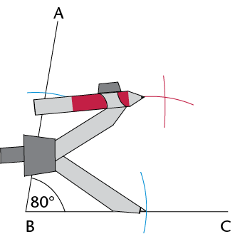
|
|
Step 3
Use a ruler to join the
vertex to the point where the arcs intersect (D).
DB is the bisector of A
 C. C.
|
|
2. Use your compass and ruler to
bisect the angles below.
You could measure each of the
angles with a protractor to check if you have bisected the
given angle correctly.
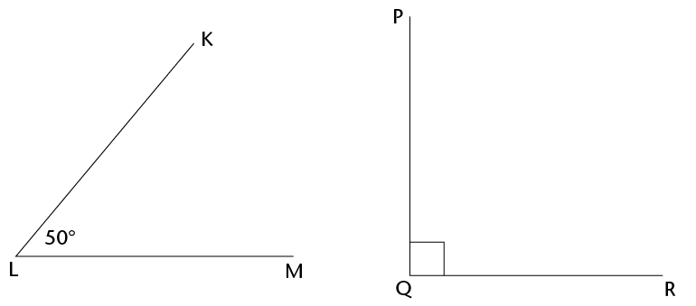
10.4 Constructing special angles without a protractor
constructing angles
of 60°, 30° and 120°
1. Read through the following
steps.
|
Step 1
Draw a line segment (JK).
With the compass on point J, draw an arc across JK and
up over above point J.

|
Step 2
Without changing the
compass width, move the compass to the point where the
arc crosses JK, and draw an arc that crosses the first
one.

|
|
Step 3
Join point J to the point
where the two arcs meet (point P).P  K = 60° K = 60°

|
2. (a) Construct an
angle of 60° at point B on the next page.
When you learn more about the
properties of triangles later, you will understand
whythe method above creates a 60° angle. Or
can you already work this out now? (Hint: What do you know about
equilateral triangles?)
(b) Bisect the angle
you constructed.
(c) Do you notice that
the bisected angle consists of two 30° angles?
(d) Extend line
segment BC to A. Then measure the angle adjacent to the
60° angle.
Adjacent means "next
to".
What is its size?
(e) The 60° angle
and its adjacent angle add up to

Constructing angles of
90° and 45°
1. Construct an angle of
90° at point A. Go back to section 10.2 if you need
help.
2. Bisect the
90° angle, to create an angle of 45°. Go
back to section 10.3 if you need help.
Challenge
Work in your exercise book. Try
to construct the following angles without using a protractor:
150°, 210° and 135°.

10.5 Constructing triangles
In this section, you will learn how
to construct triangles. You will need a pencil, a protractor, a
ruler and a compass.
A triangle has three sides and three angles. We
can construct a triangle when we know some of its measurements,
that is, its sides, its angles, or some of its sides and
angles.
Constructing triangles
Constructing triangles when three sides are
given
1. Read through the
following steps. They describe how to construct \triangle}ABC
with side lengths of 3 cm, 5 cm and 7 cm.
|
Step 1
Draw one side of the
triangle using a ruler. It is often easier to start
with the longest side.

|
Step 2
Set the compass width to
5 cm. Draw an arc 5 cm away from point A. The third
vertex of the triangle will be somewhere along this
arc.

|
|
Step 3
Set the compass width to
3 cm. Draw an arc from point B. Note where this arc
crosses the first arc. This will be the third vertex of
the triangle.

|
Step 4
Use your ruler to join
points A and B to the point where the arcs intersect
(C).

|
2. Work in your exercise
book. Follow the steps above to construct the following
triangles:
(a) \triangle}ABC with sides 6 cm, 7 cm and
4 cm
(b) \triangle}KLM with sides 10 cm, 5 cm and
8 cm
(c) \triangle}PQR with
sides 5 cm, 9 cm and 11 cm
Constructing triangles when certain angles
and sides are given
3. Use the rough sketches
in (a) to (c) below to construct accurate triangles, using a
ruler, compass and protractor. Do the construction next to each
rough sketch.
- • The dotted
lines show where you have to use a compass to measure the
length of a side.
- • Use a
protractor to measure the size of the given angles.
(a) Construct \triangle}ABC, with two
angles andone side given.

(b) Construct a \triangle}KLM, with two
sides andan angle given.

(c) Construct right-angled \triangle}PQR,
with thehypotenuse and one other side given.
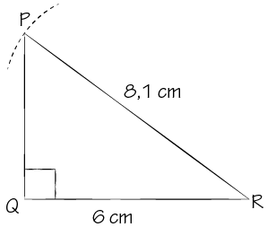
4. Measure
the missing angles and sides of each triangle in 3(a) to (c) on
the previous page. Write the measurements at your completed
constructions.
5. Compare
each of your constructed triangles in 3(a) to (c) with a
classmate's triangles. Are the triangles exactly the same?
If triangles are exactly
the same, we say they are congruent.

10.6 Properties of triangles
The angles of a triangle can be the
same size or different sizes. The sides of a triangle can be
the same length or different lengths.
properties of equilateral
triangles
1. (a) Construct \triangle}ABC
next to its rough sketch below.
(b) Measure and label the
sizes of all its sides and angles.

2.
Measure and write down the sizes of the sides and angles of
\triangle}DEF on the right.
3. Both triangles in
questions 1 and 2 are called equilateral triangles.
Discuss with a classmate if the following is true for an
equilateral triangle:
- • All the
sides are equal.
- • All the
angles are equal to 60°.
Properties of isosceles
triangles
1. (a) Construct \triangle}DEF with EF = 7
cm,  = 50° and
= 50° and  = 50°.
= 50°.
Also construct \triangle}JKL
with JK = 6 cm, KL = 6 cm and = 70°.
(b) Measure and label all the sides and
angles of each triangle.
2. Both triangles above
are called isosceles triangles. Discuss with a classmate
whether the following is true for an isosceles triangle:
- • Only two
sides are equal.
- • Only two
angles are equal.
- • The two
equal angles are opposite the two equal sides.
The sum of the angles in a
triangle
1.
Look at your constructed triangles \triangle}ABC, \triangle}DEF
and \triangle}JKL above and on the previous page. What is the
sum of the three angles each time?
2. Did you find that the
sum of the interior angles of each triangle is 180°?
Do the following to check if this is true for other
triangles.
(a) On a clean sheet of paper, construct any
triangle. Label the angles A, B and C and cut out the
triangle.
(b) Neatly tear the angles off the triangle
and fit them next to one another.
(c) Notice that  ,
,  and form a straight angle. Complete:
and form a straight angle. Complete:
 +
+  +
+  =
=
°
We can conclude that the
interior angles of a triangle always add up to
180°.
10.7 Properties of quadrilaterals
A quadrilateral is any closed shape
with four straight sides. We classify quadrilaterals according
to their sides and angles. We note which sides are parallel,
perpendicular or equal. We also note which angles are
equal.
Properties of
quadrilaterals
1. Measure and write down the
sizes of all the angles and the lengths of all the sides of
each quadrilateral below.
|
Square

|
Rectangle

|
|
Parallelogram

|
Rhombus

|
|
Trapezium
|
Kite

|
2. Use your answers in
question 1. Place a ✓ in the
correct box below to show which property is correct for each
shape.
|
|
|
|
|
|
|
|
|
Only one pair of sides are parallel
|
|
|
|
|
|
✓
|
|
Opposite sides are parallel
|
✓
|
✓
|
✓
|
✓
|
|
|
|
Opposite sides are equal
|
✓
|
✓
|
✓
|
✓
|
|
|
|
All sides are equal
|
|
|
✓
|
✓
|
|
|
|
Two pairs of adjacent sides are equal
|
|
|
✓
|
✓
|
✓
|
|
|
Opposite angles are equal
|
✓
|
✓
|
✓
|
✓
|
|
|
|
All angles are equal
|
|
✓
|
|
✓
|
|
|
Sum of the angles in a
quadrilateral
1. Add up the four angles
of each quadrilateral on the previous page. What do you notice
about the sum of the angles of each quadrilateral?
2. Did you find that the
sum of the interior angles of each quadrilateral equals
360°? Do the following to check if this is true for
other quadrilaterals.
(a) On a clean sheet of paper, use a ruler
to construct any quadrilateral.
(b) Label the angles A, B, C and D. Cut out
the quadrilateral.
(c) Neatly tear the angles off the
quadrilateral and fit them next to one another.
(d) What do you notice?
We can conclude that the
interior angles of a quadrilateral always add up to
360°.
10.8 Constructing quadrilaterals
You learnt how to construct
perpendicular lines in section 10.2. If you know how to
construct parallel lines, you should be able to construct any
quadrilateral accurately.
Constructing parallel lines to
draw quadrilaterals
1. Read through the following
steps.
|
Step 1
From line segment AB,
mark a point D. This point D will be on the line
that will be parallel to AB. Draw a line from A
through D.
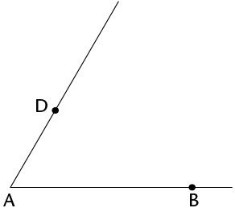
|
Step 2
Draw an arc from A that
crosses AD and AB. Keep the same compass width and draw
an arc from point D as shown.
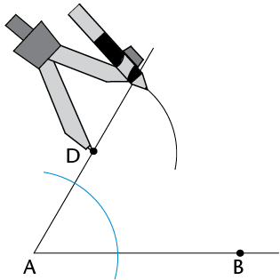
|
|
Step 3
Set the compass
width to the distance between the two points where the
first arc crosses AD and AB. From the
point where the second arc crosses AD, draw a
third arc to cross the second arc.
|
Step 4
Draw a line from D
through the point where the two arcs meet. DC is
parallel to AB.
|
2. Practise drawing a
parallelogram, square and rhombus in your exercise book.
3. Use a
protractor to try to draw quadrilaterals with at least one set
of parallel lines.
1. Do the following construction in
your exercise book.
(a) Use a compass and ruler to
construct equilateral \triangle}ABC with sides 9 cm.
(b) Without using a protractor,
bisect .Let the bisector intersect
AC at point D.
(c) Use a
protractor to measure A  B. Write the measurement on the
drawing.
B. Write the measurement on the
drawing.
2. Name the following types of
triangles and quadrilaterals.
A B C
D E F
3. Which of
the following quadrilaterals matches each description below?
(There may be more than one answer for each.)
parallelogram; rectangle; rhombus;
square; kite; trapezium
(a) All sides are equal and all angles are equal.
(b) Two pairs of adjacent sides are equal.
(c) One pair of sides is parallel.
(d) Opposite sides are parallel.
(e) Opposite sides are parallel and all angles are equal.
(f) All sides are
equal.
Challenge
1. Construct these triangles:
(a) \triangle}STU, with
three angles given:  = 45°,
= 45°,  = 70° and
= 70° and  = 65°.
= 65°.
(b) \triangle}XYZ, with two
sides and the angle opposite one of the sides given:
 = 50°, XY = 8 cm and XZ = 7
cm.
= 50°, XY = 8 cm and XZ = 7
cm.
2. Can you find more than one
solution for each triangle above? Explain your findings to a
classmate.
In this chapter, you will
learn more about different kinds of triangles and
quadrilaterals, and their properties. You will explore shapes
that are congruent and shapes that are similar. You will also
use your knowledge of the properties of 2D shapes in order to
solve geometric problems.
11.1 Types of triangles
193
11.2 Unknown angles and sides
of triangles 195
11.3 Types of quadrilaterals
and their properties 200
11.4 Unknown angles and sides
of quadrilaterals 204
11.5 Congruency 205
11.6 Similarity 207


11
Geometry of 2D shapes
11.1 Types of triangles
By now, you know that a triangle is a
closed 2D shape with three straight sides. We can classify or
name different types of triangles according to the lengths of
their sides and according to the sizes of their angles.
Naming triangles according to
their sides
1. Match the name of each type of
triangle with its correct description.
|
|
|
|
Isosceles
triangle
|
All the
sides of a triangle are equal.
|
|
Scalene
triangle
|
None of the
sides of a triangle are equal.
|
|
Equilateral
triangle
|
Two sides
of a triangle are equal.
|
2. Name each type of triangle by
looking at its sides.
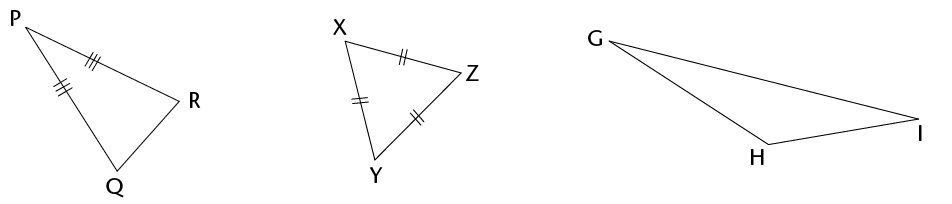
Naming triangles according to
their angles
Remember the following types of
angles:

Acute angle Right angle Obtuse angle
(< 90°)
(= 90°) (between 90° and
180°)
Study the following triangles; then
answer the questions:

Acute triangle Right-angled triangle Obtuse
triangle
1. Are all the angles of a
triangle always equal?
2. When a triangle has an
obtuse angle, it is called an
triangle.
3. When a triangle has
only acute angles, it is called an
triangle.
4. When a triangle has an
angle equal to
, it is called a
right-angled triangle.
investigating the angles and
sides of triangles
1. (a) What is the sum of the
interior angles of a triangle?
(b) Can a triangle have two right
angles?
If you cannot work out the
answers in 1(b) and (c), try to construct the triangles to
find the answers.
Explain your answer.
(c) Can a triangle have more than one obtuse
angle? Explain your answer.
2. Look at the triangles below.
The arcs show which angles are equal.
Equilateral triangle Isosceles triangle
Right-angled triangle
(a) \triangle}ABC is an equilateral
triangle. What do you notice about its angles?
(b) \triangle}FEM is an isosceles triangle.
What do you notice about its angles?
(c) \triangle}JKL is a
right-angled triangle. Is its longest side opposite the
90° angle?
(d) Construct any three right-angled
triangles on a sheet of paper. Is the longest side always
opposite the 90° angle?
Interior angles are the
angles inside a closed shape, not the angles outside of
it.

11.2 Unknown angles and sides of triangles
You can use what you know about
triangles to obtain other information. When you work out new
information, you must always give reasons for the statements
you make.
Look at the examples below of working out
unknown angles and sides when certain information is given. The
reason for each statement is written in square brackets.

 =
=  =
=  = 60° [Angles in an
equilateral \triangle} = 60°]
= 60° [Angles in an
equilateral \triangle} = 60°]
DE = DF [Given]
 =
=  [Angles opposite the equal sides of an
isosceles \triangle} are equal]
[Angles opposite the equal sides of an
isosceles \triangle} are equal]
= 55° [The sum of the interior
angles of a \triangle} = 180°; so  = 180° –
40° – 85°]
= 180° –
40° – 85°]
You can shorten the following reasons
in the ways shown:
- • Sum of
interior angles (∠s) of a
triangle (\triangle}) = 180°: Interior
∠s of
\triangle}
- • Isosceles
triangle has 2 sides and 2 angles equal: Isosceles
\triangle}
- •
Equilateral triangle has 3 sides and 3 angles equal:
Equilateral \triangle}
- • Angles
forming a straight line = 180°: Straight
line
Working out unknown angles and
sides
Find the sizes of unknown angles and
sides in the following triangles. Always give reasons for every
statement.
|
1. What is the size of
 ? ?

|
+  + +  = =
[Interior ∠s of
a \triangle}]
50° +
+
=
145° +  = =
 = =
– 145°
 = =
|
|
2. Determine the size of
.

|
+
+  = 180° [Interior
∠s
of a \triangle}] = 180° [Interior
∠s
of a \triangle}]
45° +  + 60° =
180° + 60° =
180°
 = 75° = 75°
|
|
3. (a) What is the length of
KM?
(b) Find the size of
 . .

|
(b) =  = 38° [Isosceles
\triangle}] = 38° [Isosceles
\triangle}]
+
+  = 180° [Interior
∠s
of a \triangle}] = 180° [Interior
∠s
of a \triangle}]
 + 38° +
38° = 180° + 38° +
38° = 180°
 = 180° -
38° - 38° = 180° -
38° - 38°
 = 104° = 104°
|
|
4. What is the size of
 ? ?

|
+
+  = 180° [Interior
∠s
of a \triangle}] = 180° [Interior
∠s
of a \triangle}]
 + 90° +
32° = 180° + 90° +
32° = 180°
 = 180° -
90°- 32° = 180° -
90°- 32°
 = 58° = 58°
|
|
5. (a) Find CB.
(b) Find  if if  = 50°. = 50°.

|
(a) CB = CA = 8 cm [Isosceles \triangle}]
+
+  = 180° [Interior
∠s
of a \triangle}] = 180° [Interior
∠s
of a \triangle}]
 + 50° +
50° = 180° + 50° +
50° = 180°
 = 180° -
50° - 50° = 180° -
50° - 50°
 = 80° = 80°
|
|
6. (a) Find DF.
(b) Find  if if  = 100°. = 100°.

|
(a) DF = DE = 4 mm [Isosceles \triangle}]
(b) + +  = 180° [Interior
∠s
of a \triangle}] = 180° [Interior
∠s
of a \triangle}]
100° + +  = 180° = 180°
2
 = 180° -
100° = 180° -
100°
 = 80° \div 2 = 80° \div 2
 = 40° = 40°
|
working out more unknown angles
and sides
|
1. Calculate the size of
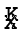 and  . .

|
24° + +  = 180° [Interior
∠s
of a \triangle}] = 180° [Interior
∠s
of a \triangle}]
+
 = 180° -
24° = 180° -
24°
2
 = 156° = 156°
 = 78° = 78°
 = 78° = 78°
|
|
2. Calculate the size of
x.

|
=
 = x [Isosceles
\triangle}] = x [Isosceles
\triangle}]
80° + x + x = 180°
[Interior ∠s
of a \triangle}]
|
|
3. KLM is a straight
line. Calculate the size of x and y.
|
|

|
100° + 50° + x = 180°
[Interior ∠s
of a \triangle}]
30° + y = 180°
[Straight line]
|
|
4. Angle
b and an angle with size 130°
form a straight angle. Calculate the size of
a and b.
|
|

|
130° + b = 180°
[straight line]
130° + 30° + a = 180°
[Interior ∠s
of a \triangle}]
|
|
5. m and n
form a straight angle. Calculate the size of m
and n.
|
|
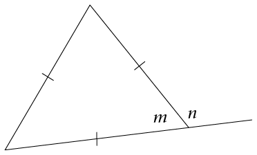
|
m =
60° [equilateral \triangle}]
m +
n =
180° [straight line]
|
|
6. BCD is a straight line
segment. Calculate the size of x.
|
|

|
=
 = x [equilateral
\triangle}] = x [equilateral
\triangle}]
A
 B = 180° -
68° [straight line] B = 180° -
68° [straight line]
A
 B = 112° B = 112°
|
|
7. Calculate the size of
x and then the size of  . .
|
|

|
x +
(2x +
40°) + (x + 20°) =
180°
[Interior ∠s
of a \triangle}]
 = 2x + 40° = 2x + 40°
 = 2(30°) +
40° = 2(30°) +
40°
 = 100° = 100°
|
|
8. Calculate the size of
 . .
|
|
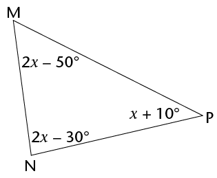
|
(x +
10°) + (2x - 30°) +
(2x -
50°) = 180°
[Interior ∠s
of a \triangle}]
5x =
180° + 30° + 50° -
10°
 = 70° = 70°
|
|
9. DNP is a straight
line. Calculate the size of x and of
y.
|
|

|
NP = M N = 56°
[Isosceles \triangle}]
x +
56° + 56° = 180°
[Interior ∠s
of a \triangle}]
M
 D = 180° -
68° [Straight line] D = 180° -
68° [Straight line]
M
 D = 112° D = 112°
N
 D = NM = y [Isosceles
\triangle}] D = NM = y [Isosceles
\triangle}]
y +
y +
112° = 180° [Interior
∠s
of a \triangle}]
|
11.3 Types of quadrilaterals and their properties
A quadrilateral is a figure with four
straight sides which meet at four vertices. In many
quadrilaterals all the sides are of different lengths and all
the angles are of different sizes.
You have previously worked with these types of
quadrilaterals, in which some sides have the same lengths, and
some angles may be of the same size.
parallelograms
rectangles
kites
rhombuses
squares
trapeziums
the properties of different
types of quadrilaterals
1. In each question
below, different examples of a certain type of quadrilateral
are given. In each case identify which kind of quadrilateral it
is. Describe the properties of each type by making statements
about the lengths and directions of the sides and the sizes of
the angles of each type. You may have to take some measurements
to be able to do this.
Question 1(a)
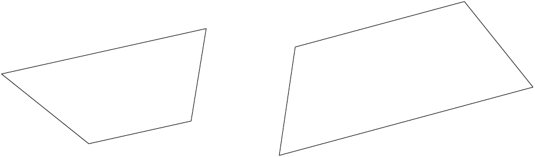
Question 1(b)

Question 1(c)
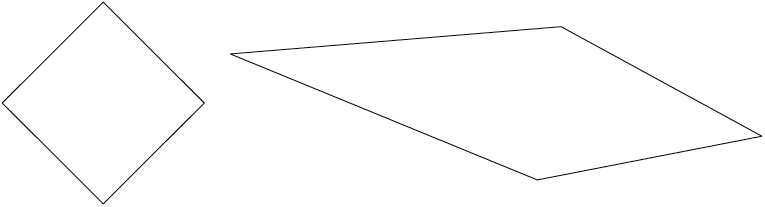
Question 1(d)

Question 1(e)

Question 1(f)
2. Use your completed
lists and the drawings in question 1 to determine if the
following statements are true (T) or false (F).
(a) A rectangle is a
parallelogram.
(b) A square is a
parallelogram.
(c) A rhombus is a
parallelogram.
(d) A kite is a
parallelogram.
(e) A trapezium is a
parallelogram.
(f) A square is a rhombus.
(g) A square is a
rectangle.
(h) A square is a kite.
(i) A rhombus is a kite.
(j) A rectangle is a
rhombus.
(k) A rectangle is a
square.
A convention is
something (such as a definition or method) that most people
agree on, accept and follow.
If a quadrilateral has
all the properties of another quadrilateral, you can
define it in terms of the other quadrilateral, as you have
found above.
3. Here are some conventional
definitions of quadrilaterals:
- • A
parallelogram is a quadrilateral with two opposite
sides parallel.
- • A
rectangle is a parallelogram that has all four angles
equal to 90°.
- • A
rhombus is a parallelogram with all four sides
equal.
- • A
square is a rectangle with all four sides equal.
- •
Atrapezium is a quadrilateral with one pair of
opposite sides parallel.
- • A
kite is a quadrilateral with two pairs of adjacent
sides equal.
Write down other definitions that
work for these quadrilaterals.
(a) Rectangle:
(b) Square:
(c) Rhombus:
(d) Kite:
(e) Trapezium:
11.4 Unknown angles and sides of quadrilaterals
finding unknown
angles and sides
Find the length of all the unknown
sides and angles in the following quadrilaterals.
Give reasons to justify your statements. (Also recall that the
sum of the angles of a quadrilateral is 360°.)
|
1.
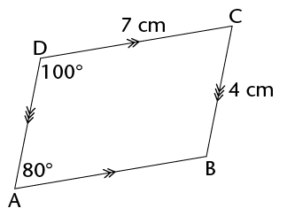
|
|
|
2.

|
|
|
3. ABCD is a kite.

|
|
|
4. The perimeter of RSTU
is 23 cm.

|
|
|
5. PQRS is a rectangle
and has a perimeter of 40 cm.

|

11.5 Congruency
what is
congruency?
1. \triangle}ABC is reflected in
the vertical line (mirror) to give \triangle}KLM.
Are the sizes and shapes of the
two triangles exactly the same?
2. \triangle}MON is rotated
90° around point F to give you \triangle}TUE.
Are the sizes and shapes of
\triangle}MON and \triangle}TUE exactly the same?
3. Quadrilateral ABCD is
translated 6 units to the right and 1 unit down to give
quadrilateral XRZY.
Are ABCD and XRZY exactly the
same?
In the previous activity, each of the
figures was transformed (reflected, rotated or translated) to
produce a second figure. The second figure in each pair has
the same angles, side lengths, size and area as the
first figure. The second figure is thus an accurate copy
of the first figure.
The wordcongruent comes
from the Latin word congruere, which means
"to agree". Figures are congruent if they match up perfectly
when laid on top of each other.
When one figure is an image
of another figure, we say that the two figures are
congruent.
The symbol for congruent
is: ≡
Notation of congruent figures
When we name shapes that are
congruent, we name them so that the matching, or corresponding,
angles are in the same order. For example, in
\triangle}ABC and\triangle}KLM on the previous
page:
We cannot assume that, when the
angles of polygons are equal, the polygons are congruent. You
will learn about the conditions of congruence in Grade 9.
 is congruent to (matches and is
equal to) .
is congruent to (matches and is
equal to) .
 is congruent to
is congruent to  .
.
 is congruent to
is congruent to  .
.
We therefore use this notation:
\triangle}ABC≡\triangle}KML.
Similarly for the other pairs of
figures on the previous page:\triangle}MON≡\triangle}ETU
and ABCD≡XRZY.
The notation of congruent figures
also shows which sides of the two figures correspond and are
equal. For example, \triangle}ABC ≡
\triangle}KML shows that:
AB = KM, BC = ML and AC = KL
The incorrect notation
\triangle}ABC ≡
\triangle}KLM will show the following incorrect information:
 = ,
= ,  = ,AB = KL, and AC = KM.
= ,AB = KL, and AC = KM.
identifying congruent angles and
sides
Write down which angles and sides are
equal between each pair of congruent figures.
|
1. \triangle}PQR
≡
\triangle}UCT
|
2. \triangle}KLM
≡
\triangle}UWC
|
|
3. \triangle}GHI
≡
\triangle}QRT
|
4. \triangle}KJL
≡
\triangle}POQ
|
11.6 Similarity
In Grade 7, you learnt that two
figures are similar when they have the same shape
(their angles are equal) but they may be different
sizes. The sides of one figure are proportionally longer or
shorter than the sides of the other figure; that is, the length
of each side is multiplied or divided by the same number. We
say that one figure is an enlargement or a reduction of the
other figure.
checking for similarity
1. Look at the rectangles below
and answer the questions that follow.
(a) Look at rectangle 1 and
ABCD:
How many times is FH longer
than BC?
How many times is GF longer
than AB?
(b) Look at rectangle 2 and
ABCD:
How many times is IL longer
than BC?
How many times is LM longer
than CD?
(c) Is rectangle 1 or rectangle 2 an
enlargement of rectangle ABCD? Explain your answer.
2. Look at the triangles below
and answer the questions that follow.

(a) How many times is:
-
• FG
longer than BC?
HF longer than AB?
-
• HG
longer than AC?
IK shorter than BC?
-
• JI
shorter than AB?
JK shorter than AC?
(b) Is \triangle}HFG an enlargement of
\triangle}ABC? Explain your answer.
(c) Is \triangle}JIK a reduction of
\triangle}ABC? Explain your answer.
In
the previous activity, rectangle KILM is an enlargement of
rectangle ABCD. Therefore, ABCD is similar to KILM. The symbol
for ‘is similar to' is: ///. So
we write: ABCD /// KILM.
The triangles on the previous page are also
similar. \triangle}HFG is an enlargement of \triangle}ABC and
\triangle}JIK is a reduction of \triangle}ABC.
In \triangle}ABC and \triangle}HFG,
 =
=  ,
,  =
=  and
and  =
=  . We therefore write it like this:
\triangle}ABC /// \triangle}HFG.
. We therefore write it like this:
\triangle}ABC /// \triangle}HFG.
In the same way, \triangle}ABC ///
\triangle}JIK.
Similar figures are
figures that have the same angles (same shape) but are not
necessarily the same size.
using properties of similar and
congruent figures
1. Are the triangles in each pair
similar or congruent? Give a reason for each answer.
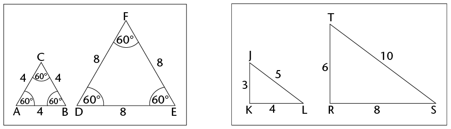
2. Is
\triangle}RTU /// \triangle}EFG? Give a reason for
your answer.
3. \triangle}PQR ///
\triangle}XYZ. Determine the length of XZ and XY.
4. Are the following statements
true or false? Explain your answers.
(a) Figures that are congruent are
similar.
(b) Figures that are similar are
congruent.
(c) All rectangles are similar.
(d) All squares are similar.
1. Study the triangles below and
answer the following questions:
(a) Tick the
correct answer. \triangle}ABC is:
 acute and equilateral
acute and equilateral
 obtuse and scalene
obtuse and scalene
 acute and isosceles
acute and isosceles
 right-angled and isosceles.
right-angled and isosceles.
(b) If AB = 40 mm, what
is the length of AC?
(c) If  = 80°, what is the size of
and of ?
= 80°, what is the size of
and of ?
(d) \triangle}ABC ≡
\triangle}FDE. Name all the sides in the two triangles that are
equal to AB.
(e) Name the side that is
equal to DE.
(f) If  is 40°, what is the size
of ?
is 40°, what is the size
of ?
2. Look at figures JKLM and PQRS.
(Give reasons for your answers below.)

(a) What type of
quadrilateral is JKLM?
Parallelogram. Opposite sides parallel.
(b) Is JKLM /// PQRS?
Yes. Corresponding side are enlarged
in the same proportion.
(c) What is the size of
 ?
?
115°. Opposite angles of
parallelogram.
(d) What is the size of  ?
?
 = 65° [Opposite angles
of parallelogram.]
= 65° [Opposite angles
of parallelogram.]
 =
=  = 65° [Corresponding angles of
similar figures].
= 65° [Corresponding angles of
similar figures].
(e) What is the length of
KL?
KL = 6 cm [Opposite sides of
parallelogram].
When you enlarge or reduce a
polygon, you need to enlarge or reduce all its sides
proportionally, or by the same ratio. This means that you
multiply or divide each length by the same number.
In this chapter, you will
explore the relationships between pairs of angles that are
created when straight lines intersect (meet or cross). You will
examine the pairs of angles that are formed by perpendicular
lines, by any two intersecting lines, and by a third line that
cuts two parallel lines. You will come to understand what is
meant by vertically opposite angles, corresponding angles,
alternate angles and co-interior angles. You will be able to
identify different angle pairs, and then use your knowledge to
help you work out unknown angles in geometric figures.
12.1 Angles on a straight line
213
12.2 Vertically opposite
angles 216
12.3 Lines intersected by a
transversal 219
12.4 Parallel lines
intersected by a transversal 222
12.5 Finding unknown angles on
parallel lines 224
12.6 Solving more geometric
problems 227
[to come]
12
Geometry of straight lines
12.1 Angles on a straight line
Sum of angles on a
straight line
In the figures below, each angle is
given a label from 1 to 5.
1. Use a protractor to
measure the sizes of all the angles in each figure. Write your
answers on each figure.
A
B
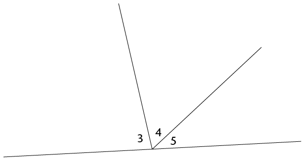
2. Use your answers to fill in
the angle sizes below.
(a)
 +
+  =
=
° (b)  +
+  +
+  =
=
°
The sum of angles that are
formed on a straight line is equal to 180°. (We
can shorten this property as: ∠s on a
straight line.)
When two lines are
perpendicular, their adjacent supplementary angles are each
equal to 90°.
Finding unknown angles on
straight lines
Work out the sizes of the unknown
angles below. Build an equation each time as you solve these
geometric problems. Always give a reason for every statement
you make.
|
1. Calculate the size of
a.

|
a + 63°
=
[∠s on a straight
line]
a =
- 63°
=
|
|
2. Calculate the size of
x.

|
x +
29° + 90° = 180°
[∠s
on a straight line]
|
|
3. Calculate the size of
y.

|
|
Finding more unknown angles on
straight lines
|
1. Calculate the size
of:
(a) x
(b) E
 B B

|
|
|
2. Calculate the size
of:
(a) m
(b) S
 R R

|
|
|
3. Calculate the size
of:
(a) x
(b) H
 F F

|
|
|
4. Calculate the size
of:
(a) k
(b) T
 P P

|
|
|
5. Calculate the size
of:
(a) p
(b) J R

|
|

12.2 Vertically opposite angles
What are vertically
opposite angles?
1. Use a protractor to
measure the sizes of all the angles in the figure. Write your
answers on the figure.
2. Notice
which angles are equal and how these equal angles are
formed.
Vertically opposite
angles (vert. opp. ∠s)
are the angles opposite each other when two lines
intersect.

Finding unknown angles
Calculate the sizes of the unknown
angles in the following figures. Always give a reason for every
statement you make.
|
1. Calculate x,
y and z.

|
x =
° [vert. opp.
∠s]
y +
105° =
°
[∠s
on a straight line]
y =
- 105°
=
z =
[vert. opp. ∠s]
|
|
2. Calculate j,
k and l.

|
|
|
3. Calculate a,
b, c and d.

|
|
equations using vertically
opposite angles
Vertically opposite angles are always
equal. We can use this property to build an equation. Then we
solve the equation to find the value of the unknown
variable.
|
1. Calculate the value of
m.

|
m + 20°
= 100° [vert. opp. ∠s]
m =
100° - 20°
=
|
|
2. Calculate the value of
t.
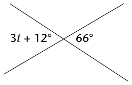
|
|
|
3. Calculate the value of
p.
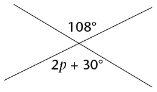
|
|
|
4. Calculate the value of
z.

|
|
|
5. Calculate the value of
y.

|
|
|
6. Calculate the value of
r.

|
|

12.3 Lines intersected by a transversal
pairs of angles
formed by a transversal
A transversal is a line that
crosses at least two other lines.

When a transversal intersects two
lines, we can compare the sets of angles on the two lines by
looking at their positions.
The angles that lie on the same side
of the transversal and are in matching positions are called
corresponding angles (corr.∠s). In
the figure, these are corresponding angles:
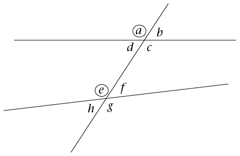
- • a
and e
- • b
and f
- • d
andh
- • c
and g.
1. In the figure,
a and e are both left of the transversal and
above a line.
Write down the location of the following corresponding angles.
The first one is done for you.
b and f:
d and h:
c
and g:
Alternate angles
(alt.∠s) lie
on opposite sides of the transversal, but are not adjacent or
vertically opposite. When the alternate angles lie between the
two lines, they are called alternate interior angles. In
the figure, these are alternate interior angles:
When the alternate angles lie outside
of the two lines, they are called alternate exterior
angles. In the figure, these are alternate exterior
angles:
2.
Write down the location of the following alternate angles:
d and f:
c and e:
a and g:
b and h:
Co-interior angles
(co-int.∠s)
lie on the same side of the transversal and between the two
lines. In the figure, these are co-interior angles:
3.
Write down the location of the following co-interior
angles:
d and e:
c and f:
identifying types of angles
Two lines are intersected by a
transversal as shown below.

Write down the following pairs of
angles:
1. two pairs of corresponding
angles:
2. two pairs of alternate
interior angles:
3. two pairs of alternate
exterior angles:
4. two pairs of co-interior
angles:
5. two pairs of vertically
opposite angles:
12.4 Parallel lines intersected by a transversal
investigating angle
sizes
In the figure below left, EF is a
transversal to AB and CD. In the figure below right, PQ is a
transversal to parallel lines JK and LM.

1. Use a protractor to
measure the sizes of all the angles in each figure. Write the
measurements on the figures.
2. Use your measurements to
complete the following table.
|
|
|
|
|
Corr.
∠s
|
 = =
;
 = =
 = =
;
 = =
 = =
;
 = =
 = =
;
 = =
|
=
;
 = =
 = =
;
 = =
 = =
;
 = =
 = =
;
 = =
|
|
Alt. int.
∠s
|
 = =
;
 = =
 = =
;
 = =
|
 = =
;
 = =
 = =
;
 = =
|
|
Alt. ext.
∠s
|
 = =
;
=
 = =
;
 = =
|
 = =
;
 = =
 = =
;
 = =
|
|
Co-int.
∠s
|
 + +  = =
 + +  = =
|
 + +  = =
 + +  = =
|
3. Look at your completed
table in question 2. What do you notice about the angles formed
when a transversal intersects parallel lines?

identifying angles on parallel
lines
1. Fill in the corresponding
angles to those given.

2. Fill in the alternate exterior
angles.

3. (a) Fill in the alternate interior
angles.
(b) Circle the two pairs of co-interior
angles in each figure.

4. (a) Without measuring, fill in all the
angles in the following figures that are equal tox and
y.
(b) Explain your reasons for each x
and y that you filled in to your partner.
A B
5. Give the value of x and
y below.

12.5 Finding unknown angles on parallel lines
working out unknown
angles
Work out the sizes of the unknown
angles. Give reasons for your answers. (The first one has been
done as an example.)
|
1. Find the sizes of
x, y andz.

|
x = 74°
[alt. ∠with
given 74°; AB //
CD]
y = 74°
[corr. ∠with
x; AB // CD]
ory =
74° [vert. opp. ∠with
given 74°]
z =
106° [co-int. ∠with
x; AB // CD]
orz =
106° [∠s on
a straight line]
|
|
2. Work out the sizes of
p, q and r.

|
|
|
3. Find the sizes of
a, b, c and d.

|
|
|
4. Find the sizes
of all the angles in this figure.

|
|
|
5. Find the sizes
of all the angles. (Can you see two transversals and
two sets of parallel lines?)

|
|
|
EXTENSION
|
|
|
|
Two angles in the
following diagram are given as x and
y.
Fill in all the angles that are equal to x and
y.

|
sum of the angles in a
quadrilateral
The diagram below is a section of
the previous diagram.

1. What kind of quadrilateral is
in the diagram? Give a reason for your answer.
2.
Look at the top left intersection. Complete the following
equation:
Angles around a point =
360°
∴ x +
y +
+
= 360°
3.
Look at the interior angles of the quadrilateral. Complete the
following equations:
Can you think of another way to
use the diagram above to work out the sum of the angles in a
quadrilateral?
Sum of angles in the
quadrilateral = x + y +
+
From question 2: x
+ y +
+
= 360°
∴ Sum of angles in
a quadrilateral =
°
12.6 Solving more geometric problems
angle relationships
on parallel lines
|
1. Calculate the sizes of
 to . to .

|
|
|
2. Calculate the sizes of
x, y and z.

|
|
|
3. Calculate the sizes of
a, b, c and d.

|
|
|
4. Calculate the size of
x.

|
|
|
5. Calculate the size of
x.

|
|
|
6.
Calculate the size of x.
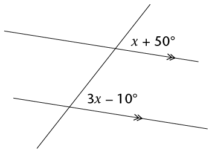
|
|
|
7. Calculate the sizes of
a and C  P. P.
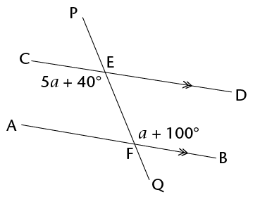
|
|
including properties of
triangles and quadrilaterals
1. Look at the drawing below. Name
the items listed alongside.
|

|
(a) a pair of vertically
opposite angles
(b) a pair of corresponding
angles
(c) a pair of alternate
interior angles
(d) a pair of co-interior
angles
|
2. In the diagram, AB// CD. Calculate the sizes of F
 G,
G,  ,
,  and
and  . Give reasons for your answers.
. Give reasons for your answers.

3. In the diagram, OK = ON,
KN// LM,
KL// MN and L
 O = 160°.
O = 160°.
Calculate the value of x. Give reasons for your
answers.


Revision 232
- • Algebraic
expressions 2 232
- • Algebraic
equations 2 235
- •
Construction of geometric figures 236
- • Geometry
of 2D shapes 240
- • Geometry
of straight lines 242
Assessment 244
Revision
Show all your steps in your
working.

algebraic expressions 2
1. Simplify:
(a) x2 + x2
(b) m + m \times m + m
(c) 5ab –
7a2 –
2a2 + 11ba
(d) (3ac2)(-4a2b)
(e) (–4a2b3)3
(f) 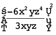
(g)
(h) 
(i) (2x + 3x)3
(j) 3x2(4x3 - 5)
(k) (4a - 7a)(a2 - 2a - 5)
(l) 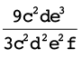
(m) 
(n) 
(o) 
2. Simplify the following
expressions:
(a) 3(a+ 2b) - 4(b - 2a)
(b) 3 - 2(5x2 + 6x - 2)
(c) 2x(x2 - x + 1) - 3(4
- x)
(d) (2a + b - 4c) - (5a + b - c)
(e) a{2a2[4 + 2(3a + 1)] -
a}
3. If a = 0, b = –2, and
c = 3, determine the
value of the following without using a calculator. Show all
working:
(a) b2c
(b) 2b –
b(ab –
5bc)
(c) 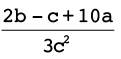
4. If y = –2, find
the value of 2y3 –
4y + 3
algebraic equations 2
1. Solve the following
equations:
(a) -x = -7
(b) 2x = 24
(c) 3x - 6 = 0
(d) 2x + 5 = 3
(e) 3(x - 4) =
-3
(f) 4(2x - 1) =
5(x -
2)
2. Sello is x years old. Thlapo is 4 years
older than Sello. The sum of their ages is 32.
(a) Write this information in an equation
using xas the
variable.
(b) Solve the equation to find Thlapo's
age.
3. The length of a
rectangle is (2x +
8) cm and the width is 2 cm. The area of the rectangle is 12
cm2.
(a) Write this information in an equation
using x as the
variable.
(b) Solve the equation to determine the
value of x.
(c) How long is the rectangle?
4. The area of a
rectangle is (8x2 + 2x) cm2, and the length is
2x cm. Determine the
width of the rectangle in terms of x, in its simplest form.
construction of geometric
figures
Do not erase any construction arcs in
these questions.
1. (a) Construct D  F = 56° with your ruler,
pencil, and a protractor. Label the angle correctly.
F = 56° with your ruler,
pencil, and a protractor. Label the angle correctly.
(b) Bisect D  F using only a compass, ruler, and
pencil (no protractor).
F using only a compass, ruler, and
pencil (no protractor).
2. Here is a rough sketch of a
quadrilateral (NOT drawn to scale):

Construct the quadrilateral
accurately and full size below.

3. Using only a compass, ruler
and pencil, construct:
(a) A line through C perpendicular to AB
(b) A line through D perpendicular to AB

4. Construct and label the
following triangles and quadrilaterals:
(a) Triangle ABC, where AB = 8 cm; BC = 5,5
cm and AC = 4,9 cm

(b) Rhombus GHJK, where GH = 6 cm and
 = 50°
= 50°

5. Here is a rough sketch of
triangle FGH (NOT drawn to scale):

Using a ruler, pencil, and protractor,
construct and label the triangle accurately.
6. Construct an angle of
120° without using a protractor.

geometry of 2D shapes
1. True or false: all
equilateral triangles, no matter what size they are, have
angles that equal 60°.
2. (a) In a triangle, two of the angles are
35° and 63°. Calculate the size of the
third angle.
(b) In a quadrilateral, one of the angles is
a right angle, and another is 80°. If the remaining
two angles are equal to each other, what is the size of
each?
3. If triangle MNP has
 = 40° and
= 40° and  = 90°, what is the size of
= 90°, what is the size of
 ?
?
4. Write definitions of the
triangles in the table below.
|
|
|
|
|
A
triangle which has all sides equal and so each angle is
equal to 60°.
|
A
triangle in which two of the sides are equal. The
angles opposite the equal sides are also equal.
|
A
triangle in which one angle is equal to
90°.
|
5. The following list gives the
properties of three quadrilaterals, A, B and C.
(a) Give the special names of each of shapes
A, B and C.
Quadrilateral A: The opposite sides are
equal and parallel.
Quadrilateral B: The adjacent sides
are equal, while the opposite sides are not equal.
Quadrilateral C: All of the angles are right
angles.
(b) What property must Quadrilateral A also
have to make it a rhombus?
(c) What property must Quadrilateral A also
have to make it a rectangle?
6. Determine the size of
. Show all steps of your working and give
reasons.
x = 30°
7. Determine the size of
x. Give reasons.
geometry of straight lines
1. Study the diagram
alongside:
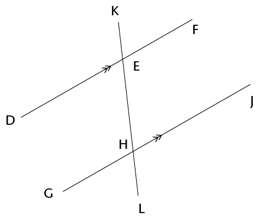
(a) Name an angle that is vertically
opposite to E  G.
G.
(b) Name an angle that is corresponding to E
 G.
G.
(c) Name an angle that is co-interior with E
 G.
G.
(d) Name an angle that is alternate to E
 G.
G.
2. Determine the size of
x in each of the following diagrams. Show all steps of
working and give reasons.
(a)
x = 18°
(b)
x + 90° = 110° [corr. ∠s; DF
// GJ]
x = 110° - 90°
x = 20°
(c)
(d)
x = 180° - 2(50°)
[sum of ∠s of
Δ = 180°]
(e) Are line segments AB and DE parallel?
Prove your answer.
Assessment
In this section, the numbers in
brackets at the end of a question indicate the number of marks
the question is worth. Use this information to help you
determine how much working is needed. The total number of marks
allocated to the assessment is 75.

1. Simplify the following
expressions:
(a) 5x2 –
6x2 + 10x2 (1)
(b) 4(3x – 7)
– 3(2 + x) (2)
(c)
(–2a2bc3)2 \div 4abcd (3)
(d)  (3)
(3)
(e)  (3)
(3)
(f) 2[3x2 – (4
– x2)] – [9 +
(4x)2] (3)
2. Find the value of a if b = 3, c = –4 and
d = 2:
(a) a = b + c \times d (2)
(b) ab2 = 2c –
d \div 2 (3)
3. Solve the following
equations:
(a)
–7x = 56 (2)
(b) 4(x + 3) = 16 (2)
4. Sipho, Fundiswa and
Ntosh are brothers. Sipho earns Rx per month; Fundiswa
earns R1 000 more than Sipho per month, and Ntosh earns double
what Sipho earns. If you add their salaries together you get a
total of R27 000.
(a) Write this information in an
equation using x. (2)
(b) Solve the equation to find
how much Fundiswa earns per month. (2)
5. Construct the
following figure using only a pencil, ruler and compass. Do not
erase any construction arcs.
(a) An angle of 60°
(2)
(b) The perpendicular bisector of
line VW, where VW = 10 cm (3)

(c) Triangle KLM, where KL = 8,3
cm; LM = 5,9 cm and KM = 7 cm (4)
(d)
Parallelogram EFGH, where E = 60°, EF = 4,2 cm and
EH = 8 cm (4)

6. (a) What is/are the
property/properties that make a rhombus different to a parallelogram?
(1)
(b) True or false: a rectangle is
a special type of parallelogram. (1)
7. Determine the size of
x in each figure. Show all the necessary steps and give
reasons.
(a)
(3)
(b)
(4)
(c)
(3)
x = 180° - 2(38°)
[isos. Δ and sum of ∠s in
Δ]
8. Study the following diagram.
Then answer the questions that follow:

(a) Write
down the correct word to complete the sentence: x and
y form a pair of
angles.
(1)
(b) Write down an equation that
shows the relationship between angles x and y.
(1)
9. Determine the size of
x, showing all necessary steps and giving reasons for
all statements that use geometrical theorems:
(a)
(4)
(b)
(5)
x = 105° \div 3 =
35°
(c)
(3)
x = ED = 72° [corr. ∠s AB
// EC]
10. Consider the
following diagram, in which it is given: D  I = 30°, DE = EI, DF
// IG, and GH = IH.
I = 30°, DE = EI, DF
// IG, and GH = IH.

(a) Determine, with reasons, the
size of  . (6)
. (6)
(b) Which of the following
statements is correct? Explain your answer. (2)
(i) \triangle}DEI is similar to
\triangle}GHI
(ii) \triangle}DEI is congruent to
\triangle}GHI
(iii) We cannot determine a relationship
between \triangle}DEI and \triangle}GHI since there is not
enough information given.
Statement
is correct because